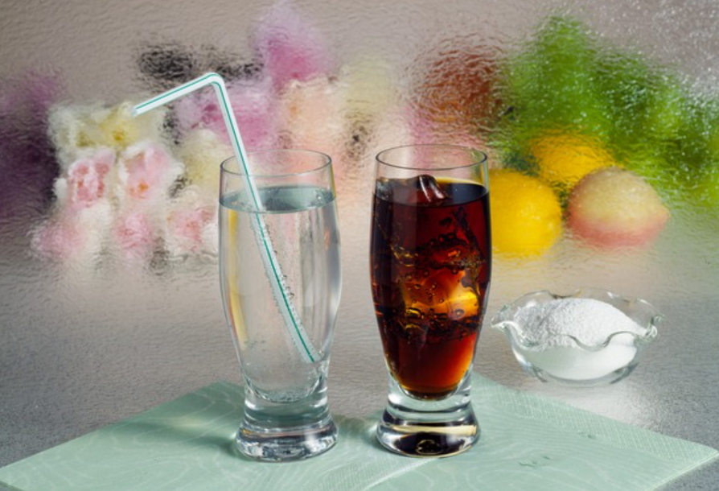
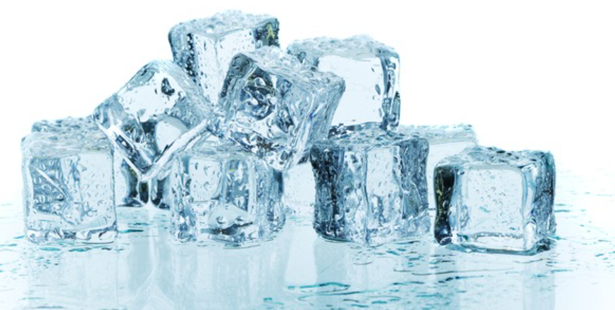
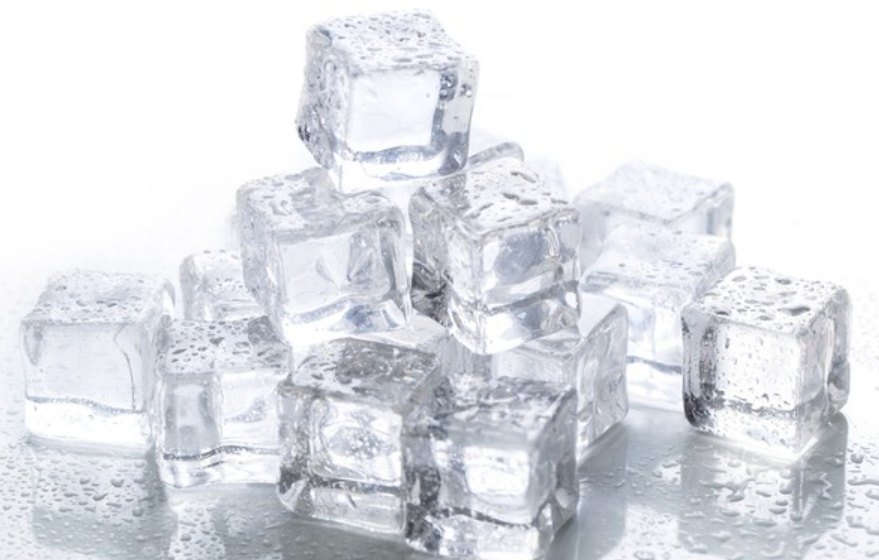

🏠 얼음어는시간 알아두면 도움 되는 정보
용인 하수구막힘 전문 시공 후기

📋 작업 개요
- 위치: 용인
- 서비스 유형: 하수구막힘, 고압세척
- 작업 일시: 2023. 7. 2. 20:15
- 업체명: 하수구수사대 (010-5615-2118)
🔍 문제 상황
안녕하세요 하수구수사대입니다.
우리가 평소에 시원한 물이나 음료를 마시기 위해서 필요한 것이 바로 얼음인데요. 우리가 얼음을 얼리기 위해서는 적정한 온도와 시간이 필요하다고 할 수 있습니다. 특히나 더운 여름철에는 얼음을 많이 찾다 보니 냉장고를 자주 열게 되고 아무래도 냉기가 빠져나가게 되는 일이 발생을 하게 되는데요.
그렇기 때문에 냉기를 유지하기 위해서는 신경을 써야 할 것들이 많이 있습니다. 날씨가 더워질수록 차가운 음료나 물을 마시고 싶기 때문에 항상 냉기를 유지를 하는 것이 필요합니다.

🔎 원인 분석
💡 전문가 진단: 오늘은 얼음어는시간에 대한 정보를 이야기해 보도록 하겠습니다.
아직은 추운 겨울이라 아무래도 얼음을 찾는 것이 덜하다고는 할 수 있지만 다가오는 여름을 대비해서 항상 얼음을 얼려두고 제때 먹기 위해서는 얼음어는시간을 알아두면 도움이 되실 수 있습니다. 여름철에 외출을 하고 돌아와서 시원한 음료나 물을 한잔 마시고 싶지만 얼음이 없어서 그렇게 하지 못하게 되면 기다리는 시간이 힘들 수밖에 없는 것입니다.
오늘은 얼음어는시간에 대한 정보를 이야기해 보도록 하겠습니다.
우리가 아무 생각 없이 평소에 얼음을 얼리다가도 어느 날 갑자기 얼음을 얼리기 위해서 매일 트레이에 물을 붓다 보면 의문점이 생기게 될 수 있는데요. 보통 생각하는 것보다 얼음이 잘 어는 것 같지 않은 느낌이 들기 때문입니다. 그래서 미쳐 기다리지 못하고 사 먹게 되는 경우가 생길 수 있습니다. 그래서 얼음어는시간을 단축을 해서 좀 더 빨리 얼음을 만드는 방법이 궁금하실 것 같은데요.
얼음이 얼기까지 어느 정도의 시간이 걸릴까요?

🔧 작업 과정
얼음은 온도가 영하로 되는 0도에서부터 어는점이 발생을 해서 만들어지기 시작하는 것인데요. 보통 일반 가정에서 사용을 하고 있는 냉동고의 온도는 평균적으로 영하 19도로 유지를 하고 있는 것이 대부분인데요. 영하 19도 이하의 냉동고에서는 느리게 어는 것인지 아니면 다른 것이 문제인지를 궁금해하실 수 있습니다. 일반 가정의 냉동실에서 속까지 얼음이 딱딱하게 어는데 까지는 4시간 정도의 시간이 필요한데요.
시간적인 여유를 두고 얼음을 얼리게 되면 꽝꽝 언 얼음을 먹을 수 있지만 급한 경우에는 이 시간을 기다리기가 힘든 경우가 많습니다. 조금이라도 얼음이 어는 시간을 단축을 하기 위해서는 다음 방법을 알아두시면 좀 더 편리한데요.
시간을 단축할 수 있는 방법은
얼음 트레이를 깨끗하게 세척을 한 후에 물을 가득 채워서 오픈되어 있는 윗면을 제외하고 나머지를 쿠킹호일로 싸주시면 되는데요. 그리고 냉동실에 넣어주신 후에는 외부 공기가 유입이 되지 않도록 문을 열지 않는 것이 필요합니다.
간혹 뜨거운 온수를 이용을 하면 더 빠르게 얼릴 수 있다는 이야기를 들어보신 적이 있으실 텐데요. 하지만 냉수보다 온수는 열에너지가 많기 때문에 냉각 과정이 더 빠를 수밖에 없는 것입니다. 또한 온수를 냉동실에 넣게 되면 주변의 음식의 신선도가 떨어지게 되기 때문에 급하게 필요한 경우가 아니라면 자주 사용하지 않는 것이 좋습니다.
만약에 120분 정도도 기다리지 못하는 경우에는 트레이에 온수를 담아서 아랫면과 옆면을 쿠킹호일로 싸두면 좀 더 빠르게 얼음을 만들 수는 있지만 자주 사용을 하거나 하면 오히려 냉동고에 있는 음식의 신선도를 떨어트리거나 기능적으로 손상이 올 수 있기 때문에 자주 사용하지 않는 것이 좋습니다.


✅ 작업 완료
갑자기 얼음이 필요한 상황이 생긴다면 오늘 알려드리는 방법을
통해서 조금이라도 시간 단축을 하시기를 바랍니다.

⚠️ 하수구 배관 막힘 예방 및 관리 가이드
- ✅ 머리카락, 비닐, 물티슈 등 물에 분해되지 않는 이물질은 하수구 유입을 절대 금지해 주세요.
- ✅ 하수구 거름망을 씌우고 모여진 이물질은 주기적으로 쓰레기통에 바로 비워주셔야 합니다.
- ✅ 배관 노후가 심할 경우 이물질이 더 쉽게 걸리므로 주기적인 배관 세척(고압세척 등)을 권장합니다.
- ✅ 작업 후 1년 이내 재발 시 하수구수사대에서 무상 A/S 보증 서비스를 제공합니다.
💡 핵심 정리
- 확실한 장비 작업(내시경 점검 및 샤프트 스케일링)으로 원인을 뿌리 뽑습니다.
- 작업 후 1년 이내에 동일한 부위 재발 시 100% 무상 A/S 서비스를 보장합니다.
- 서울 · 경기 · 인천 전 지역에 24시간 언제든 긴급 출동할 수 있도록 항시 대기 중입니다.
❓ 자주 묻는 질문 (FAQ)
🚨 용인 하수구막힘 문제로 고민이신가요?
정확한 원인 진단과 확실한 시공으로 재발 없는 해결을 약속드립니다.
24시간 긴급 출동 | 서울 · 경기 · 인천 전지역 | 1년 내 재발 시 무상 A/S